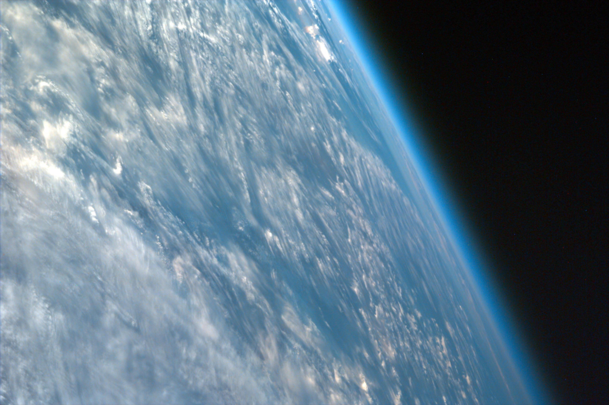
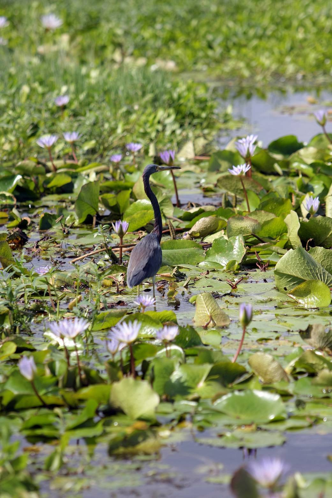
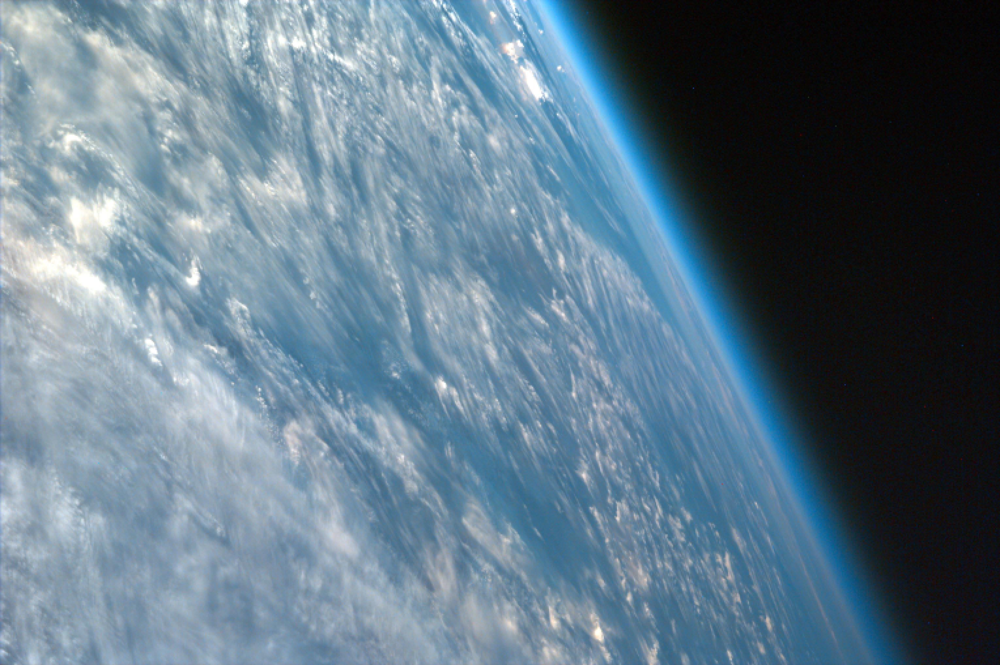
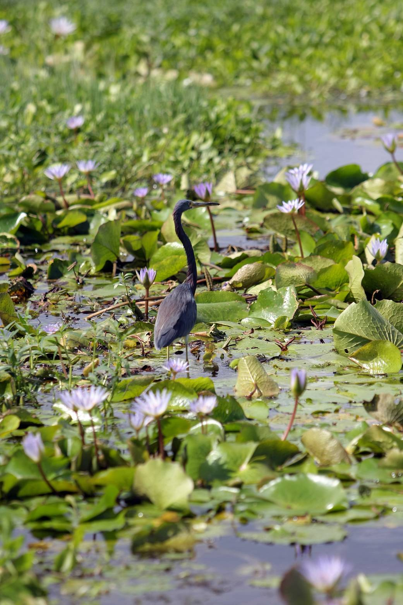

Ogólne informacje
To do tej pory jedyna planeta na której potwierdzono istnieje życia. Promień Ziemi wynosi 6,371 km.
Obrót wokół własnej osi zajmuje jej 23 godziny, 56 minut i 4 sekundy, a orbita wokół słońca 365 dni.
Jej atmosfera składa się głównie z azotu, tlenu, dwutlenku węgla, argonu i neonu. Dzięki oddalaniu i
przybliżaniu się do Słońca, na Ziemi występują 4 pory roku zmieniające globalny klimat.
Dzięki płynnemi żelaznemu rdzeniu, Ziemia posiada pole magnetyczne chroniące ją od aktywności Słońca. Aktywność Słońca przejawia się na Ziemi
spektakularnymi zorzami na biegunach i dużych wysokościach geograficznych.
Wokół Ziemi krąży widoczny na niebie
księżyc który swoją grawitacją stabilizuje fale na
Oceanach i spowalnia obrót Ziemi wokół własnej osi jednak wokół Ziemi krąży też wiele innych naturalnych
satelitów jak asteroidy.
Powierzchnia i budowa
Ziemia podzielona jest na 7 kontynentów oddzielonych oceanami płynnej wody.
Ziemia jest bogata w rózne minerały. Ziemia ma bardzo zróżnicowaną powierzchnię dzięki aktywności tektonicznej i klimatom.
Klimaty
Ziemia ma bardzo zróżnicowane strefy klimatyczne takie jak pustynie czy lodowce. Najniższa zarejestrowana temperatura to -89.4°C.
Na Ziemi występują opady deszczu, gradu i śniegu wywołane przez skraplanie się chmór.
Na Ziemi występują klimaty takie jak suche gorące pustynie niepozwalające na rozwój życia, ciepłe równiny, głównie w Europie, wilgotne deszczowe lasy i zimne góry i lodowce gdzie woda stale jest zamrożona i zamiast deszczu pada śnieg.
Życie
Pierwsze życie na Ziemi powstało ok. 4 miliarda lat temu, najprawdopodobnie uformowało się w wodzie.
Jako pierwsze powstały proste jednokomórkowe bakterie oddychające dwutlenkiem węgla i wydychające tlen który doprowadził do wielkiej oksygenizacji.
3.5 miliarda lat temu organizmy wykształciły fotosyntezę pozwalająca im czerpać energię ze Słońca.
1.5 miliarda lat temu powstały pierwsze wielokomórkowe organizmy w których każda komórka odgrywała inną funkcję.
530 milionów lat temu w oceanach pojawiły się pierwsze.
Pierwsze rośliny pojawiły sie 700 milionów lat temu, a pierwsze lądowe zwierzęta 423 milionów lat temu.
Ludzie
Pierwsi ludzie pojawili się na Ziemi około 6 milionów lat temu. Potrafili wytwarzać narzędzia, szukać i budować schronienia, używać ognia i hodować rośliny by przetrwać.
Ludzie stali się najliczniejszymi ssakami na Ziemi i najinteligentniejszym gatunkiem na Ziemi.

 


